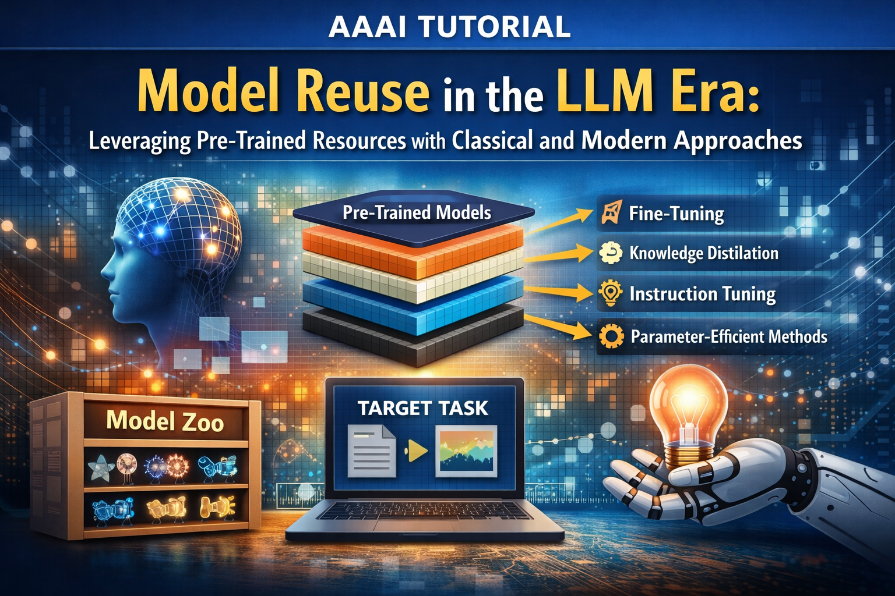

AAAI 2026 Tutorial onModel Reuse in the LLM Era:Leveraging Pre-Trained Resources with Classical and Modern Approaches |
||
Location Room Peridot 202
|
||

The classical machine learning paradigm relies on data-centric approaches, which demand large-scale training data and significant computational resources, often limiting their scalability and practicality. In contrast, the pre-trained model (PTM)-centric paradigm, or model reuse, offers a compelling alternative by leveraging the knowledge embedded in existing models, thereby avoiding the need to train models from scratch. As model scales have grown, strategies for reusing PTMs have evolved—ranging from classical techniques such as vanilla fine-tuning and knowledge distillation to modern approaches like instruction tuning and parameter-efficient adaptation.
This tutorial offers a comprehensive overview of model reuse techniques spanning both traditional and foundation-model settings, highlighting the shared principles that unify them. We begin by introducing a unified model reuse workflow: selecting suitable PTMs from a model zoo, adapting them to target tasks, and managing them effectively. We then revisit classical reuse strategies and demonstrate how these fundamental ideas naturally extend to large-scale scenarios, including large language models (LLMs) and other foundation models. Through a combination of theoretical insights and practical examples, participants will gain a clear and in-depth understanding of how to reuse lightweight or cutting-edge foundation PTMs efficiently and effectively.
Further Reading: Da-Wei Zhou, Han-Jia Ye, A Unifying Perspective on Model Reuse: From Small to Large Pre-Trained Models, IJCAI 2025. [PDF]
Han-Jia Ye is an associate professor in the School of Artificial Intelligence at Nanjing University. His primary research interest is in machine learning, including representation learning, model reuse, and meta-learning. He received his PhD degree in computer science from Nanjing University, China, in 2019. He has served as the tutorial co-chair of SDM’23 and doctoral forum co-chair of SDM’22. Additionally, he is an area chair for top-tier conferences, including ICML, NeurIPS, ICLR, IJCAI, CVPR, and others.
Da-Wei Zhou received the PhD degree in computer science from Nanjing University, China, in 2024. He is currently an associate researcher with the National Key Lab for Novel Software Technology, the School of Artificial Intelligence, Nanjing University. His research interests lie primarily in machine learning and computer vision. He has published extensively on top-tier conferences and journals in relevant fields, including NeurIPS, ICLR, ICML, CVPR, TPAMI, IJCV, etc. He serves as Area Chair in leading conferences, such as ICLR, and was recognized as NeurIPS’s top reviewer, ICML’s top reviewer, and CVPR’s outstanding reviewer.
Zhenguo Li is a Chief AI Scientist at Autel and an Adjunct Professor in the Department of Computer Science and Engineering at The Hong Kong University of Science and Technology. He holds a Bachelor’s Degree and a Master’s Degree in Mathematics from Peking University, and a PhD in Machine Learning from The Chinese University of Hong Kong (supervised by Prof. Xiaoou Tang). His previous roles include Associate Research Scientist in the Department of Electrical Engineering at Columbia University (working with Prof. Shih-Fu Chang) and Director of Huawei Noah’s Ark AI Theory Lab. His research interests include machine learning and artificial intelligence, and his representative works include DeepFM, Meta-SGD, PixArt-α, LEGO-Prover, Dream 7B, and FUDOKI. He is also a pioneer in AutoML and AI Codec. His research has resulted in over 100 international patents and standards (e.g., 5.5G, JPEG-AI), with broad applications in autonomous driving, smartphone satellite communication (e.g., HUAWEI Pura 70 Ultra), recommendation systems, and AIGC. He is a long-serving Area Chair for top AI conferences (NeurIPS, ICLR, ICML) and a consecutive honoree of “AI 2000 Most Influential Scholars” (Aminer) and “Top 2% Most-Cited Scientists Worldwide” (Stanford University).
| Time | Session |
|---|---|
| 8:30 - 8:40 | Opening & Motivation |
| 8:40 - 10:30 |
Han-Jia Ye
Unified Workflow for Model Reuse; Classical Strategies and their extensions |
| 10:30 - 11:00 | Coffee Break |
| 11:00 - 12:20 |
Da-Wei Zhou
Model Reuse in the Foundation-Model Era: instruction tuning, parameter-efficient adaptation, and practical examples |
| 12:20 - 12:30 | Closing & Q&A |
The template is adapted from this page.